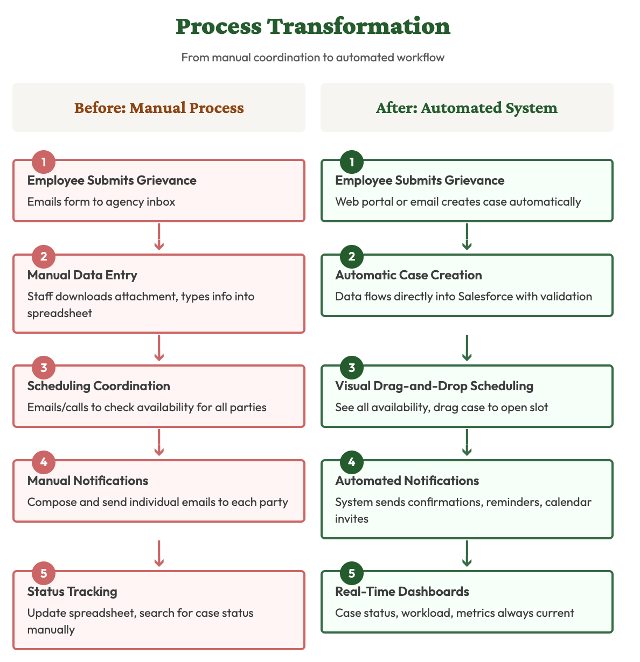
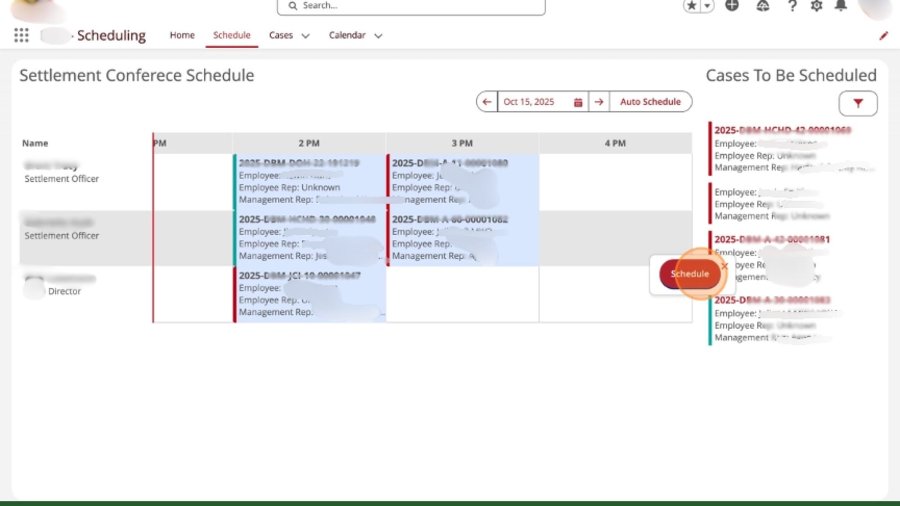
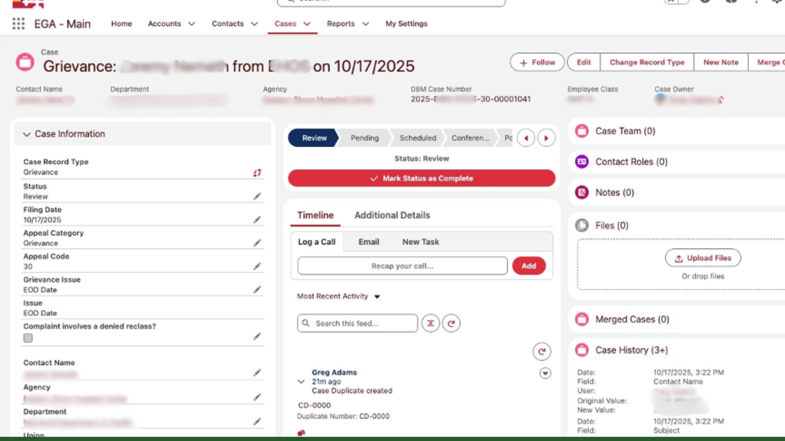

A state agency managing 1,200–1,400 employee grievance cases a year was running on email threads and spreadsheets. They'd spent three years securing funding. We had six months. On go-live day, a settlement officer said: "To be here at this point, with a functioning system from the 2020s after what we have been stuck with for so long, is incredible."
The agency managed employee grievances and disciplinary appeals across multiple state departments. Their process: employee emails a form → intake specialist downloads attachment → manually types every field into a tracking spreadsheet. Scheduling a settlement conference meant checking availability for settlement officers, union reps, management, and conference rooms through back-and-forth emails and phone calls.
Staff spent days on administrative overhead. Backlogs grew. Employees waited longer for resolution. Status updates required digging through spreadsheets and email threads. They'd been living with this for years. They finally had budget to fix it.
We spent significant time upfront in stakeholder interviews with intake specialists, schedulers, settlement officers, and supervisors. Not to gather requirements for a spec document — to understand how work actually flowed, where it broke down, and what "fixed" would feel like to the people doing the job.
The coordination bottleneck wasn't an accident. It was structural: no shared visibility into availability, no automated handoffs, no way to see the full pipeline at a glance. Every step required a human to touch it manually, which meant every step was a place the case could stall.
We mapped 127 requirements across 13 feature areas before writing a line of configuration. That foundation meant we weren't building and guessing — we were building and confirming.

The before/after: five manual steps replaced by five automated ones
Built on Salesforce Government Cloud. Chose it for security credentials, flexibility, and long-term sustainability — the agency would own a system on a widely-supported platform, not a proprietary black box.
Operated on two-week development cycles with continuous demonstrations of working functionality. Validated design decisions early. Adjusted based on user feedback.

The scheduling interface: pending cases in the sidebar, drag to an available slot — coordination that used to take hours now takes minutes

The case record: every detail, status, and history in one place — no more spreadsheet hunting
Settlement officers called the system user-friendly. Intake staff described it as something they loved working in. Staff who had operated on a legacy system for years were enthusiastic about handling conferences, closing cases, and managing escalations through the new platform.
The coordination bottleneck that had capped how many conferences the team could schedule per day — gone. The hours intake specialists spent re-typing data — redirected to actual case review. The manual report compilation — replaced by a dashboard click.
We also planned for the end from the start. Complete documentation, role-based user guides, administrator training. Any Salesforce partner can support future development. The agency owns this — they don't depend on us to run it. That independence was always the goal.